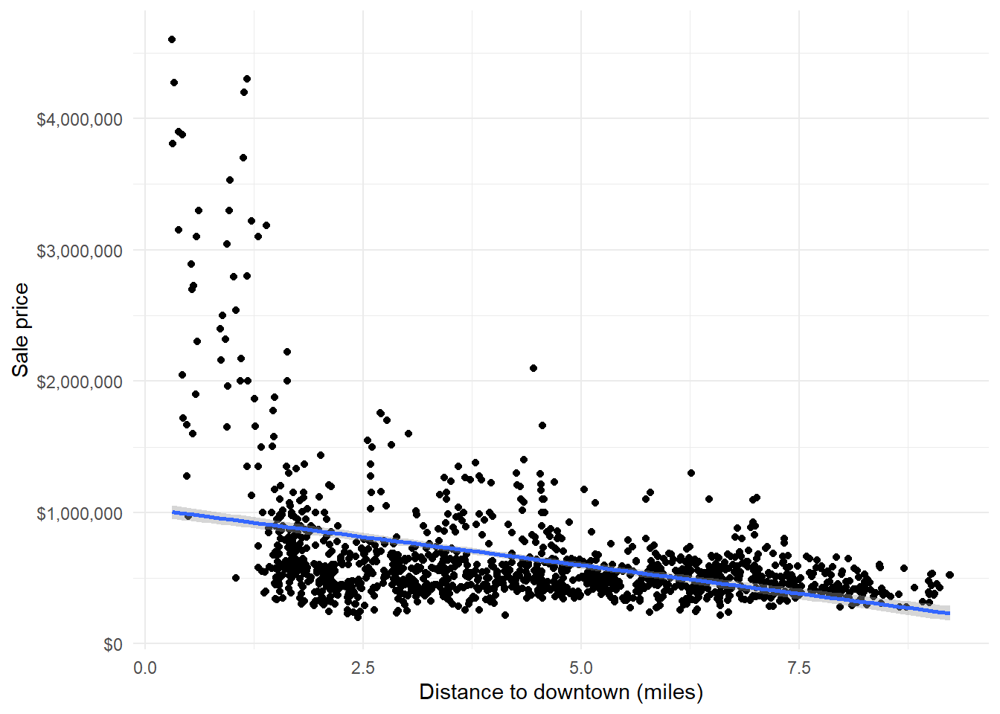
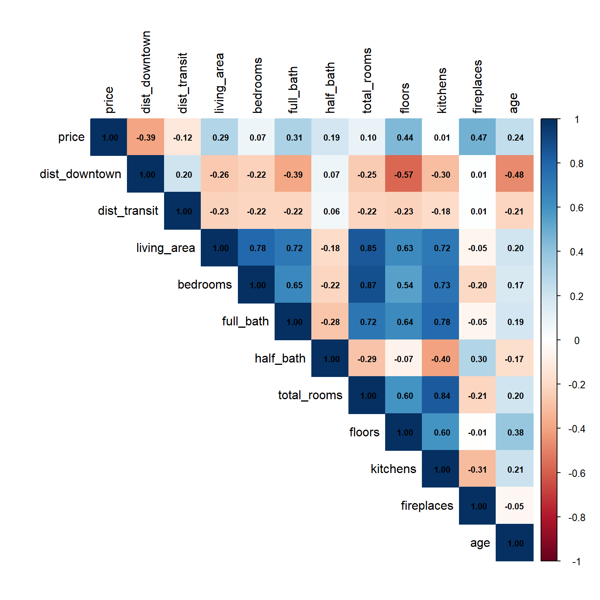
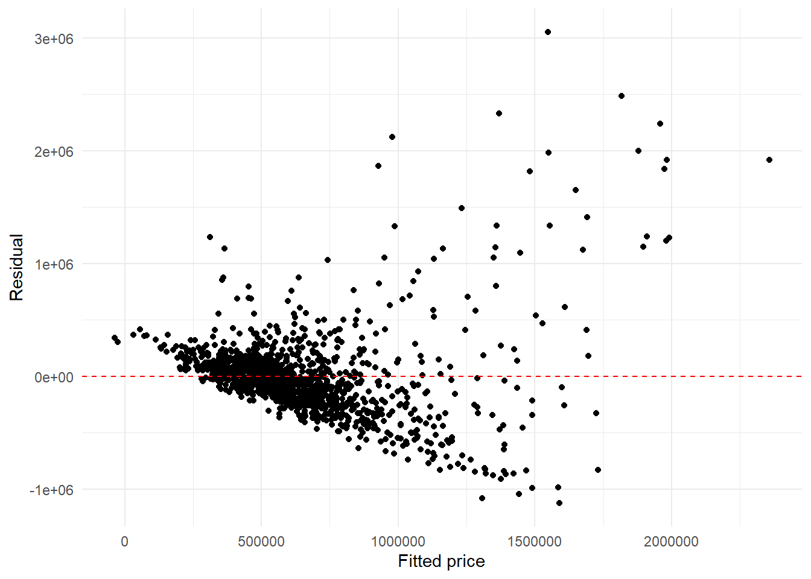
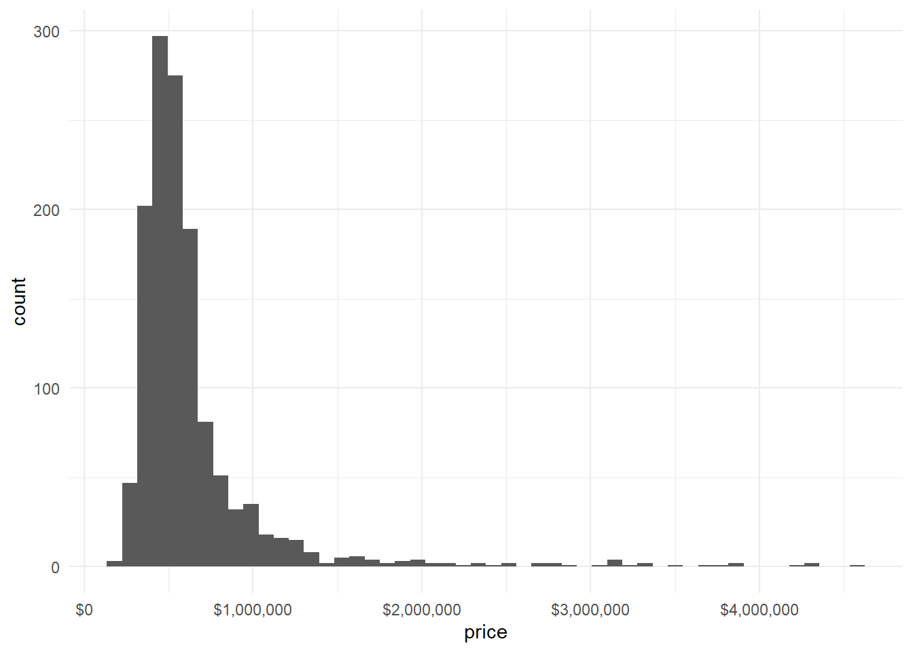
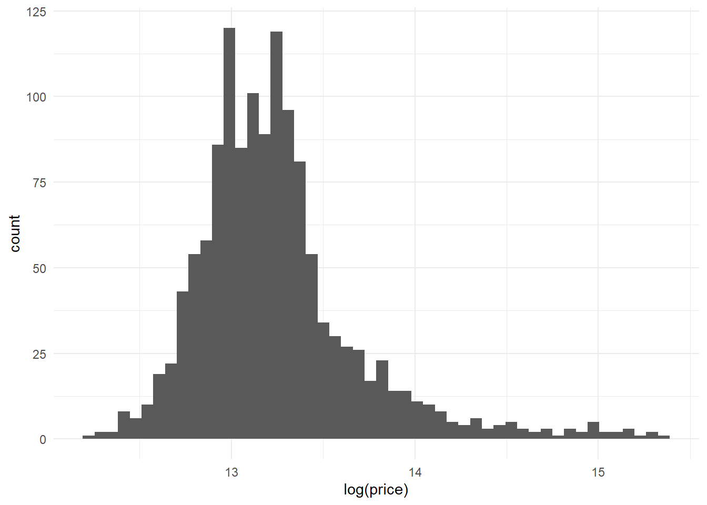
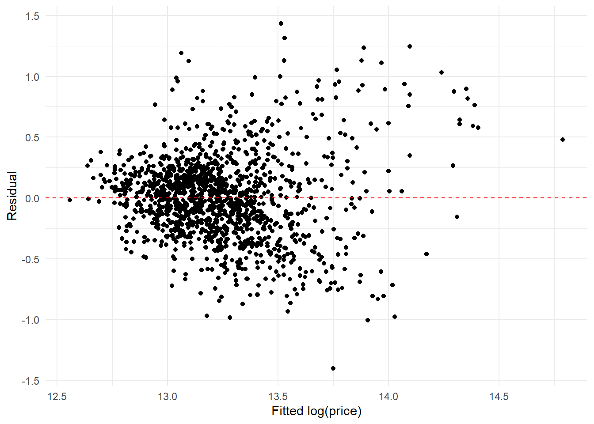

library(tidyverse)
library(sf)
# you might need to install the following two
library(corrplot)
library(modelsummary)Explain the Distance Effect on Housing Prices with Regression in
11.118/11.218 Applied Data Science for Cities
Overview
Do houses closer to downtown sell for more? The idea goes back to the monocentric city model (Alonso, 1964): jobs and amenities concentrate in the center, so people are willing to pay more to live closer to it. But a house’s price also depends on what the house is (its size, number of bathrooms, age, style) and on what is around it, such as access to transit. Regression lets us look at the factor of distance to downtown while holding these other factors constant. This approach of breaking a price into the contributions of its characteristics is known as a hedonic price model (Rosen, 1974).
In this tutorial, we will fit a series of linear regression models, each one building on the last. Throughout, the main goal is to explain the relationship between price and distance to downtown.
The Data We Use Today
Datasets we will use for this lab and exercise are here: Data Download Link
boston_house_clean.csv: The dataset contains 1,327 house sales in Boston. Sale prices come from Ken Steif’s open textbook Public Policy Analytics (Chapter 3), which uses it to model home prices. The sales are from the years 2015 to 2016.
Housing characteriscis follow the fields of the City of Boston’s Property Assessment data on Analyze Boston, where you can find the full data dictionary (“Data Key”). I have cleaned the data for today: kept only 1–3 family homes, removed records with missing values, and dropped building styles that are unknown or have very few observations.
houses <- read_csv("data/boston_house_clean.csv")Each row is one house. The outcome we want to explain is price, the sale price. The other columns describe the house: living_area (sq.ft.), number of bedrooms, number of full_bath, yr_built, style, and its location (lat, lon).
Calculate Distances
This part uses st_distance() from the sf package. This function calculates the distance between features in any two spatial files. So we can calculate:
dist_downtown: distance from each house to downtown. We use Downtown Crossing as the center point.dist_transit: distance from each house to its nearest rail station (subway, light rail, or commuter rail). Station locations come from the MBTA’s GTFS feed, a standard format transit agencies use to publish their schedules and stops.
I am putting all the distance calculation in one block. Once you run it, the houses will get two new columns. Both are measured in miles.
# Download MBTA stops, keep light rail (0), subway (1) and commuter rail (2)
gtfs <- tempfile(fileext = ".zip")
download.file("https://cdn.mbta.com/MBTA_GTFS.zip", gtfs, mode = "wb")
stops <- read_csv(unz(gtfs, "stops.txt")) |>
filter(vehicle_type %in% c(0, 1, 2)) |>
st_as_sf(coords = c("stop_lon", "stop_lat"), crs = 4326) |>
st_transform(2249)
# Distance to center point (Downtown Crossing)
downtown <- st_sfc(st_point(c(-71.0605, 42.3554)), crs = 4326) |>
st_transform(2249)
# Convert houses to points
houses_sf <- st_as_sf(houses, coords = c("lon", "lat"), crs = 4326) |>
st_transform(2249)
# EPSG 2249 is in feet, divide by 5280 to get miles
nearest <- st_nearest_feature(houses_sf, stops)
houses <- houses |>
mutate(
dist_downtown = as.numeric(st_distance(houses_sf, downtown)) / 5280,
dist_transit = as.numeric(st_distance(houses_sf, stops[nearest, ], by_element = TRUE)) / 5280
)These houses range from 0.3 to 9 miles from downtown.
summary(houses$dist_downtown) Min. 1st Qu. Median Mean 3rd Qu. Max.
0.3068 2.5284 4.3703 4.4457 6.3092 9.2308 Most are close to a rail station: half of them are within about 0.4 miles.
summary(houses$dist_transit) Min. 1st Qu. Median Mean 3rd Qu. Max.
0.01492 0.27843 0.40738 0.45513 0.55598 1.65557 Model 1: Price and Distance to Downtown
Let’s first take a look at the relationship with a scatterplot. geom_smooth(method = "lm") draws the best-fitting straight line through the points, which is exactly what a simple linear regression does.
houses |>
ggplot(aes(x = dist_downtown, y = price)) +
geom_point() +
geom_smooth(method = "lm") +
scale_y_continuous(labels = scales::dollar) +
labs(x = "Distance to downtown (miles)", y = "Sale price") +
theme_minimal()
The line slopes downward: houses farther from downtown tend to sell for less. To put a number on it, we fit a linear regression with lm(). The formula reads as “price explained by distance to downtown”: the outcome goes on the left of ~, and the predictors go on the right.
m1 <- lm(price ~ dist_downtown, data = houses)
summary(m1)
Call:
lm(formula = price ~ dist_downtown, data = houses)
Residuals:
Min 1Q Median 3Q Max
-620238 -224874 -58376 94089 3595321
Coefficients:
Estimate Std. Error t value Pr(>|t|)
(Intercept) 1031213 27383 37.66 <2e-16 ***
dist_downtown -86484 5541 -15.61 <2e-16 ***
---
Signif. codes: 0 '***' 0.001 '**' 0.01 '*' 0.05 '.' 0.1 ' ' 1
Residual standard error: 435600 on 1325 degrees of freedom
Multiple R-squared: 0.1553, Adjusted R-squared: 0.1547
F-statistic: 243.6 on 1 and 1325 DF, p-value: < 2.2e-16Look at the Estimate column in the Coefficients table:
(Intercept)is the predicted price when all predictors are 0, here a house sitting right at downtown: about $1,031,000.dist_downtownis the slope: every additional mile from downtown, the sale price tends to drop by about $86,500. The three stars (***) tell us this relationship is statistically significant.
The Adjusted R-squared near the bottom: 0.15, shows model fit. Distance alone explains only 15% of the variation in housing prices. That makes sense because distance alone cannot explain all the differences in housing prices.
Model 2: Add Control Variables
To get a better picture of the distance effect, we should compare houses that are otherwise similar. We do this by adding control variables to the model.
Choose controls with a correlation plot
Before adding variables, it’s a good habit to check how they relate to the outcome and to each other. A correlation matrix computes the correlation coefficient (from -1 to 1) for every pair of variables, and corrplot() turns it into a picture.
Let’s first create one more variable: the age of the house, which is more intuitive than the year built.
houses <- houses |>
mutate(age = 2026 - yr_built)Then select all numeric variables you are interested in, compute cor(), this gives us pairwise correlations.
houses |>
select(price, dist_downtown, dist_transit, living_area, bedrooms,
full_bath, half_bath, total_rooms, floors, kitchens, fireplaces, age) |>
cor() price dist_downtown dist_transit living_area bedrooms
price 1.000000000 -0.394078819 -0.124824770 0.29004912 0.07332008
dist_downtown -0.394078819 1.000000000 0.204842778 -0.26338251 -0.22455465
dist_transit -0.124824770 0.204842778 1.000000000 -0.22854164 -0.21641759
living_area 0.290049124 -0.263382513 -0.228541640 1.00000000 0.78000100
bedrooms 0.073320079 -0.224554651 -0.216417593 0.78000100 1.00000000
full_bath 0.314558149 -0.388169752 -0.217435294 0.71850517 0.64725871
half_bath 0.189172472 0.071734868 0.055666729 -0.18007536 -0.21993994
total_rooms 0.097373980 -0.254512481 -0.215926698 0.84999486 0.87467947
floors 0.441254180 -0.574019995 -0.225159991 0.63445744 0.54292025
kitchens 0.005903916 -0.303643167 -0.182478009 0.71597857 0.73286454
fireplaces 0.470083157 0.008452175 0.005282647 -0.05083765 -0.20481696
age 0.243673458 -0.475556922 -0.210155001 0.19503608 0.16959797
full_bath half_bath total_rooms floors kitchens
price 0.31455815 0.18917247 0.09737398 0.441254180 0.005903916
dist_downtown -0.38816975 0.07173487 -0.25451248 -0.574019995 -0.303643167
dist_transit -0.21743529 0.05566673 -0.21592670 -0.225159991 -0.182478009
living_area 0.71850517 -0.18007536 0.84999486 0.634457439 0.715978569
bedrooms 0.64725871 -0.21993994 0.87467947 0.542920251 0.732864541
full_bath 1.00000000 -0.27738904 0.72078469 0.636184174 0.776111580
half_bath -0.27738904 1.00000000 -0.28770748 -0.065873711 -0.404224252
total_rooms 0.72078469 -0.28770748 1.00000000 0.596849502 0.835221762
floors 0.63618417 -0.06587371 0.59684950 1.000000000 0.597017964
kitchens 0.77611158 -0.40422425 0.83522176 0.597017964 1.000000000
fireplaces -0.05272384 0.29523319 -0.21156007 -0.005797239 -0.313643403
age 0.18728702 -0.17308899 0.19918781 0.383161790 0.212829957
fireplaces age
price 0.470083157 0.24367346
dist_downtown 0.008452175 -0.47555692
dist_transit 0.005282647 -0.21015500
living_area -0.050837649 0.19503608
bedrooms -0.204816964 0.16959797
full_bath -0.052723836 0.18728702
half_bath 0.295233194 -0.17308899
total_rooms -0.211560071 0.19918781
floors -0.005797239 0.38316179
kitchens -0.313643403 0.21282996
fireplaces 1.000000000 -0.04761307
age -0.047613070 1.00000000Then add a corrplot to plot them.
houses |>
select(price, dist_downtown, dist_transit, living_area, bedrooms,
full_bath, half_bath, total_rooms, floors, kitchens, fireplaces, age) |>
cor() |>
corrplot(method = "color", type = "upper",
addCoef.col = "black", number.cex = 0.7, tl.col = "black")
A few things to look for:
The first row: how each variable relates to
price. Darker colors mean stronger correlations.Correlations among the predictors.
living_area,bedrooms,total_roomsandkitchensare all strongly correlated (0.7–0.9), because they all describe roughly the same thing: how big the house is. Putting all of them in one model is not very useful, since they carry overlapping information.Our variable of interest (the second row):
dist_downtownmoderately correlates with several house characteristics. Houses near downtown tend to be older (-0.48), taller (floors, -0.57), and have more bathrooms (-0.39). This is why we need controls: some of the price difference we attributed to distance may come from these characteristics.
I will choose variables that help me explain my story of how distance shapes prices: preferably variables that affect the price and related to my variable of interest. I first want to include a few variables that represent each aspect of the house: living_area for size, plus bedrooms, full_bath and age. Then I want to include dist_transit to control for the location, since being close to a rail station could also raise the price. We will start from here and later build up to see how things change.
Fit the model
Add the predictors to the right side of ~, separated by +:
m2 <- lm(price ~ dist_downtown + dist_transit + living_area + bedrooms + full_bath + age, data = houses)
summary(m2)
Call:
lm(formula = price ~ dist_downtown + dist_transit + living_area +
bedrooms + full_bath + age, data = houses)
Residuals:
Min 1Q Median 3Q Max
-789576 -212989 -48025 125235 3281506
Coefficients:
Estimate Std. Error t value Pr(>|t|)
(Intercept) 619238.09 80933.80 7.651 3.82e-14 ***
dist_downtown -61309.36 6274.41 -9.771 < 2e-16 ***
dist_transit -27873.36 44749.83 -0.623 0.5335
living_area 207.99 20.74 10.030 < 2e-16 ***
bedrooms -105507.38 9031.37 -11.682 < 2e-16 ***
full_bath 95007.13 19456.79 4.883 1.17e-06 ***
age 1089.70 432.33 2.521 0.0118 *
---
Signif. codes: 0 '***' 0.001 '**' 0.01 '*' 0.05 '.' 0.1 ' ' 1
Residual standard error: 404700 on 1320 degrees of freedom
Multiple R-squared: 0.2738, Adjusted R-squared: 0.2705
F-statistic: 82.93 on 6 and 1320 DF, p-value: < 2.2e-16Now let’s go through this output more carefully.
Coefficients: effect size
The Estimate tells us how each predictor is associated with price, assuming all other variables are held constant. The sign (+ or -) tells you the direction of the relationship.
dist_downtown: for every additional mile from downtown, price tends to decrease by about $61,300, keeping all other factors the same. This is smaller than the $86,500 in Model 1. Part of what looked like a distance effect was actually about the houses themselves.age: each additional year of age is associated with about $1,090 higher price. Older is not worse here: many of Boston’s older houses are in desirable neighborhoods.living_area: if living area goes up by 1 sq.ft., the house price tends to increase by about $208. Or, 100 sq.ft. more is about $20,800.full_bath: one more full bathroom is associated with about $95,000 higher price.bedrooms: one more bedroom is associated with a price decrease of about $105,500. Surprising? A opposite direction from what we might expect often indicates variable correlation. However, this is still interpretable, because remember it is holding living area constant. Adding a bedroom to a house of the same size means cutting the space into smaller rooms, which buys don’t necessarily value.
Statistic values: significance
The Pr(>|t|) (p-value) measure the extent to which a coefficient is “statistically significant”. In other words, whether the relationship we see between that predictor and the outcome is likely to be real, or could have happened just by random chance. By convention, a p-value below 0.05 is considered significant (the lower the better), and R marks it with stars at the end of each row.
dist_downtownhas a p-value below 2e-16: very significant.dist_transithas a p-value of 0.53: not significant. We also found in our descritive summary at the beginning that most houses in this data are already within walking distance of a station, so there is not much difference to explain. Once we know how far a house is from downtown and what the house is like, knowing its distance to the nearest rail station doesn’t add much.
Model fit
The coefficient of determination (R²) tells us the proportion of variance in the outcome that is explained by the predictors, ranging from 0 (no explanatory power) to 1 (perfect fit). For multiple linear regression, look at the Adjusted R², which penalizes adding predictors that don’t really help. In our example it’s 0.27, meaning this model explains about 27% of the total variance in housing prices, up from 15% in Model 1.
Model 3: Add a Categorical Variable
style describes the building type: Cape, Colonial, Decker (the “triple-decker”, a Boston classic), Row houses, etc.

houses |> count(style)# A tibble: 8 × 2
style n
<chr> <int>
1 Cape 110
2 Colonial 404
3 Conventional 265
4 Decker 178
5 Row_End 66
6 Row_Middle 92
7 Semi_Det 85
8 Two_Fam_Stack 127For a numeric variable, it’s easy to say: “one more square foot”, “one more mile”. But style has no units. Going from Cape to Colonial is not “one unit” of anything, and Colonial is not “more” than Cape. They only switch from one type to another.
So in the modeling world, one category is set as the reference group, and the style column is converted to several 0/1 columns.

m3 <- lm(price ~ dist_downtown + dist_transit + living_area + bedrooms + full_bath + age + style, data = houses)
summary(m3)
Call:
lm(formula = price ~ dist_downtown + dist_transit + living_area +
bedrooms + full_bath + age + style, data = houses)
Residuals:
Min 1Q Median 3Q Max
-1125566 -167271 -14068 118716 3051538
Coefficients:
Estimate Std. Error t value Pr(>|t|)
(Intercept) 388918.46 82666.99 4.705 2.81e-06 ***
dist_downtown -39935.12 6804.16 -5.869 5.54e-09 ***
dist_transit -28076.17 41296.90 -0.680 0.496712
living_area 257.18 19.65 13.089 < 2e-16 ***
bedrooms -75146.54 8645.09 -8.692 < 2e-16 ***
full_bath 106195.06 18796.22 5.650 1.97e-08 ***
age 714.71 405.04 1.765 0.077871 .
styleColonial -24429.82 42071.47 -0.581 0.561560
styleConventional -286004.18 51437.52 -5.560 3.26e-08 ***
styleDecker -348206.55 62918.56 -5.534 3.77e-08 ***
styleRow_End 148541.77 67913.86 2.187 0.028903 *
styleRow_Middle 418781.01 65196.78 6.423 1.86e-10 ***
styleSemi_Det -150788.31 63025.42 -2.392 0.016874 *
styleTwo_Fam_Stack -175077.97 52365.67 -3.343 0.000851 ***
---
Signif. codes: 0 '***' 0.001 '**' 0.01 '*' 0.05 '.' 0.1 ' ' 1
Residual standard error: 368400 on 1313 degrees of freedom
Multiple R-squared: 0.4015, Adjusted R-squared: 0.3956
F-statistic: 67.77 on 13 and 1313 DF, p-value: < 2.2e-16Read the result table
For a categorical variable, R automatically creates one 0/1 variable (a “dummy”) for each category, except the reference group. Every other category is compared against it. By default, R uses the first category in alphabetical order, which here is Cape.
So each style coefficient reads as: compared to a Cape house of the same size, age, and location, how much more (or less) does this style sell for?
styleRow_Middle: a house in the middle of a row sells for about $419,000 more than a comparable Cape.styleRow_Endis about $149,000 more. Row houses in Boston are concentrated in historic neighborhoods such as Back Bay, South End and Beacon Hill.styleDecker(-$348,000),styleConventional(-$286,000) andstyleTwo_Fam_Stack(-$175,000) sell for less than a comparable Cape.styleColonialhas a p-value of 0.56: did not find significant difference from Cape.
Now look at the rest of the table:
dist_downtowndrops again, to about -$39,900 per mile, but stays highly significant. Some of what we attributed to distance was really about building style.dist_transitstays non-significant.- Adjusted R² rises to 0.40. Style adds quite a lot of explanatory power.
Check the Residuals
A residual is the difference between a house’s actual price and the price our model predicts. If a linear model fits well, the residuals should look like random noise scattered evenly around 0. Let’s plot residuals against the predicted (fitted) values:
houses |>
mutate(fitted = fitted(m3), residuals = resid(m3)) |>
ggplot(aes(x = fitted, y = residuals)) +
geom_point() +
geom_hline(yintercept = 0, linetype = "dashed", color = "red") +
labs(x = "Fitted price", y = "Residual") +
theme_minimal()
This doesn’t look like random noise. The points fan out to the right. The model makes much bigger errors for expensive houses than for cheap ones.
Both point back to the outcome variable. So it’s worth checking the distribution of price:
houses |>
ggplot(aes(x = price)) +
geom_histogram(bins = 50) +
scale_x_continuous(labels = scales::dollar) +
theme_minimal()
As expected, housing prices are right-skewed. A common fix is to take the logarithmic transformation of Y. This does not change the values themselves, but it changes the scale1 and can help a straight line fit the data better. Here is the same histogram with taking a log-transformation on price. After the log transformation, the distribution is much more symmetric.
houses |>
ggplot(aes(x = log(price))) +
geom_histogram(bins = 50) +
theme_minimal()
Note, R’s log() uses base e ≈ 2.718 instead of 10, so it’s \(\log_{e}(price)\).
Model 4: Log-transform the Outcome
Apply log() directly inside the formula:
m4 <- lm(log(price) ~ dist_downtown + dist_transit + living_area + bedrooms + full_bath + age + style,
data = houses)
summary(m4)
Call:
lm(formula = log(price) ~ dist_downtown + dist_transit + living_area +
bedrooms + full_bath + age + style, data = houses)
Residuals:
Min 1Q Median 3Q Max
-1.40356 -0.21736 0.00135 0.18774 1.43387
Coefficients:
Estimate Std. Error t value Pr(>|t|)
(Intercept) 1.285e+01 7.936e-02 161.876 < 2e-16 ***
dist_downtown -4.412e-02 6.532e-03 -6.754 2.16e-11 ***
dist_transit 4.705e-02 3.964e-02 1.187 0.23549
living_area 2.461e-04 1.886e-05 13.044 < 2e-16 ***
bedrooms -5.888e-02 8.299e-03 -7.095 2.11e-12 ***
full_bath 1.091e-01 1.804e-02 6.045 1.95e-09 ***
age 3.906e-04 3.888e-04 1.005 0.31528
styleColonial 1.050e-01 4.039e-02 2.600 0.00941 **
styleConventional -1.507e-01 4.938e-02 -3.051 0.00233 **
styleDecker -1.873e-01 6.040e-02 -3.101 0.00197 **
styleRow_End 2.085e-01 6.520e-02 3.197 0.00142 **
styleRow_Middle 3.673e-01 6.259e-02 5.868 5.57e-09 ***
styleSemi_Det 5.636e-03 6.050e-02 0.093 0.92580
styleTwo_Fam_Stack -5.213e-02 5.027e-02 -1.037 0.29991
---
Signif. codes: 0 '***' 0.001 '**' 0.01 '*' 0.05 '.' 0.1 ' ' 1
Residual standard error: 0.3536 on 1313 degrees of freedom
Multiple R-squared: 0.3907, Adjusted R-squared: 0.3847
F-statistic: 64.77 on 13 and 1313 DF, p-value: < 2.2e-16Check the residuals again:
houses |>
mutate(fitted = fitted(m4), residuals = resid(m4)) |>
ggplot(aes(x = fitted, y = residuals)) +
geom_point() +
geom_hline(yintercept = 0, linetype = "dashed", color = "red") +
labs(x = "Fitted log(price)", y = "Residual") +
theme_minimal()
The residuals are now spread more evenly around 0.
Interpretation changes
The outcome of Model 4 is now log(price), so the coefficients can not be interpreted in dollars.
After log (Model 4): for every additional mile from downtown, the log of price tends to be 0.044 smaller. With a few steps of math, we can still know the coefficient now describes the percentage changes. When a predictor goes up by 1 unit, price changes by about \((e^{\beta} - 1) \times 100\%\).
(exp(coef(m4)["dist_downtown"]) - 1)dist_downtown
-0.04315759 The result -0.043 means each additional mile from downtown goes with about 4.3% lower price.
Compare the Models
Reading four separate summary() outputs gets tedious. modelsummary() puts them side by side, which is also how regression results are usually presented in reports and papers. Each column is a model, the numbers in parentheses are standard errors, and the stars show significance.
modelsummary(
list("Model 1" = m1, "Model 2" = m2, "Model 3" = m3, "Model 4 (log)" = m4),
stars = TRUE,
gof_map = c("nobs", "r.squared", "adj.r.squared"),
notes = "Model 4 predicts log(price)"
)| Model 1 | Model 2 | Model 3 | Model 4 (log) | |
|---|---|---|---|---|
| + p < 0.1, * p < 0.05, ** p < 0.01, *** p < 0.001 | ||||
| Model 4 predicts log(price) | ||||
| (Intercept) | 1031212.627*** | 619238.086*** | 388918.458*** | 12.846*** |
| (27383.219) | (80933.797) | (82666.986) | (0.079) | |
| dist_downtown | -86483.666*** | -61309.362*** | -39935.120*** | -0.044*** |
| (5541.085) | (6274.412) | (6804.161) | (0.007) | |
| dist_transit | -27873.359 | -28076.173 | 0.047 | |
| (44749.832) | (41296.904) | (0.040) | ||
| living_area | 207.986*** | 257.185*** | 0.000*** | |
| (20.736) | (19.649) | (0.000) | ||
| bedrooms | -105507.378*** | -75146.539*** | -0.059*** | |
| (9031.367) | (8645.088) | (0.008) | ||
| full_bath | 95007.133*** | 106195.062*** | 0.109*** | |
| (19456.793) | (18796.220) | (0.018) | ||
| age | 1089.702* | 714.710+ | 0.000 | |
| (432.332) | (405.037) | (0.000) | ||
| styleColonial | -24429.815 | 0.105** | ||
| (42071.471) | (0.040) | |||
| styleConventional | -286004.183*** | -0.151** | ||
| (51437.515) | (0.049) | |||
| styleDecker | -348206.549*** | -0.187** | ||
| (62918.562) | (0.060) | |||
| styleRow_End | 148541.769* | 0.208** | ||
| (67913.861) | (0.065) | |||
| styleRow_Middle | 418781.014*** | 0.367*** | ||
| (65196.780) | (0.063) | |||
| styleSemi_Det | -150788.307* | 0.006 | ||
| (63025.422) | (0.061) | |||
| styleTwo_Fam_Stack | -175077.974*** | -0.052 | ||
| (52365.672) | (0.050) | |||
| Num.Obs. | 1327 | 1327 | 1327 | 1327 |
| R2 | 0.155 | 0.274 | 0.402 | 0.391 |
| R2 Adj. | 0.155 | 0.270 | 0.396 | 0.385 |
Note: the Adjusted R² (0.38) of Model 4 can’t be compared directly with the others, because the last model explain different outcomes (price vs. log of price).
Reading across the first row, the story of today’s tutorial: the distance-to-downtown coefficient shrinks as we add controls (from -$86,500 to -$61,300 to -$39,900 per mile), but it stays negative and significant in every model, including the log model (about -4% per mile). Distance to transit, as a location control, is never significant once distance to downtown is in the model.
Final Notes
Location is still underrepresented. Distance to downtown is a single line drawn from the center. It doesn’t capture the differences between neighborhoods at similar distances. Several options here: 1) create variables such as population density, school quality, crime, etc. to describe the surrounding neighborhood, and use them as location controls. 2) add neighborhood names as a categorical variable, although the result table will be long. 3) Apply a spatial regression model, which accounts for the fact that nearby houses tend to have similar prices.
Variable selection. You could have chosen variables like fireplace and did not choose bedroom, and still had a good reason: each makes sense as a factor in housing prices. When several modeling choices are all reasonable, the one with a higher adjusted R² means the model explains more and gives a more precise estimate.
There is no single correct set of variables, but the first rule is each must make sense for your question. Practical guidelines include: add variables that affect the outcome and are related to your variable of interest, avoid near-duplicates, keep it simple, and lean on what earlier studies have used.
Exercise
Now it’s your turn to build a regression model, this time with a different dataset and a different question. You can follow the same workflow we just walked through.
The Data
The data comes from the EPA’s Smart Location Database (SLD). The EPA built it around 2011 to measure location efficiency: how the built environment of a place supports (or discourages) walking, transit use and shorter car trips. It covers every census block group in the US, and summarizes the built environment with a set of “D” variables, a framework that is widely used in transportation research (Ewing & Cervero, 2010): Density, Diversity of land uses, Design of the street network, Distance to transit, and Destination accessibility.
The variables are assembled from several sources, including the Census American Community Survey, the Census LEHD employment data, HERE street maps, and transit agencies’ schedules.
We have an extract for you: 3,393 block groups in the Boston metropolitan area, with 11 variables. Download sld_boston_metro.csv and its codebook sld_boston_metro_codebook.csv from our link.
| Variable | Description |
|---|---|
GEOID20 |
Block group ID |
county |
County name |
Pct_AO0 |
Share of households with zero cars (0-1) |
D4C |
Transit frequency: transit trips per hour within ¼ mile, afternoon peak |
D4A |
Walking distance to the nearest transit stop (meters) |
D1A |
Residential density (housing units per acre) |
D1B |
Population density (people per acre) |
D1C |
Employment density (jobs per acre) |
D2A_EPHHM |
Land use mix of jobs and housing (0-1, higher = more mixed) |
D3B |
Street intersection density (intersections per square mile) |
R_PCTLOWWAGE |
Share of resident workers who are low-wage earners (0-1) |
For more details on how each variable was created, see the SLD Technical Documentation and User Guide.
Your Question
Do neighborhoods with more frequent transit have more car-free households?
Suppose the outcome you are interested in is Pct_AO0, and your variable of interest is D4C.
However, if you are interested in another relationship, feel free to propose your own research question in one sentence like that.
Suggested steps
Whichever question you choose, keep your variable of interest at the center of the analysis: what does its coefficient tell you, and does it stay significant?
Read and describe the data. Use
glimpse()orsummary()orhist()to check each variable’s type and range. Which variables are numeric or categorical? What are their ranges and missing values? How the values distribute? Rename the variables if you prefer.Look at the relationships. Make a scatterplot of your outcome against your variable of interest. Then make a correlation plot (
corrplot()) of the numeric variables. Which variables are correlated with the outcome? Are there predictors that are so strongly correlated with each other that you should keep only one?Fit a series of models. Start simple and build up, as we did with the housing data:
- Model 1: the outcome and your variable of interest only.
- Model 2: add the control variables you selected. Choose a set that you think best helps you explain the relationship in question.
- Model 3: add
countyas a categorical variable. Which county is used as the reference group?
Save each model to its own object (
m1,m2,m3), then put them side by side withmodelsummary(list("Model 1" = m1, "Model 2" = m2, "Model 3" = m3), stars = TRUE).Check the results. Interpret the coefficient (effect size), its significance, and the model fit, in plain language. How does the coefficient change from Model 1 to Model 3? How much does
countycontribute to the model, and why is that?
Lab Report
Please submit a rendered Quarto report (HTML) that walks us through your modeling process. This can include: how you prepared the data and chose your variables, your correlation plot, a side-by-side table of your models. End with a short paragraph answering your question and noting the limitations of your analysis.
A reminder that you should include embed-resources: true in your YAML header, to preserve all your pictures in your HTML.
Please upload your rendered HTML file to Canvas by 9am, Wednesday, November 4.
Footnotes
On a regular axis, each equal step adds the same amount. On a \(\log_{10}\) axis, each step is ×10.↩︎